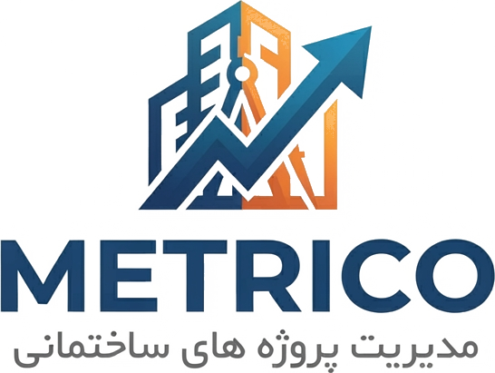

Metrico committee pitch · English only · noindex · for PDF regeneration

MetricoThe daily mess on mid-size builds
On mid-size residential and commercial projects, the pre-sale → build → handover loop still runs across spreadsheets, chat threads, and paper. The people who need answers lose hours stitching them together.
One operating loop
Metrico is a live SaaS / PWA built for that loop — so a developer or site supervisor can see sold units, what is owed, and what an owner can safely see, without rebuilding the same report every week.
Working software
Metrico is not a concept deck. The app is in production for demos and onboarding — bilingual, field-oriented, with labeled sample data so evaluators can walk the full path.
Demo account: demo@metrico.app (password from founders). Sample data is labeled demo — not paying traction.
Early validation — honest
We do not invent logos or paying-customer charts. What we have today is founder-as-user proof, a small feedback circle, and one live project on the product.
~10 years across investor, supervising engineer, and project superintendent roles. Product ideas come from sites, not from slides alone.
On the founder’s own work, Metrico already covers about seventy percent of the previous blind spots — finance through progress and owner updates.
Founder and spouse build together; four operators review (supervisors, architect/designer, builder, investor). One active construction project runs on Metrico today.
Frame: early validation and design partners — not scaled commercial traction.
Year-1 effort weights
These percentages are planning assumptions for time and focus in Year 1. They are not a claimed revenue share by country.
Familiar operating market: language, relationships, and field workflows we already know. Useful for product feedback and early operators.
Company base, technical hiring, first pilots, denser feedback. Beachhead for learning how to sell into the EU.
Selective later European outreach after the Estonia anchor is working — not a spray of regional claims.
ICP: builders / developers, contractors, technical offices and site supervisors. Grow through product strength and field referrals.
Annual SaaS
Metrico sells software subscriptions on annual prepaid plans — not custom agency rebuilds per project. Primary revenue is paid upgrades.
Free
1 project · core tools
€50 / year
More projects · sales & reports
€100 / year
Inventory · tax prep · deeper finance
€150 / year
Takeoff · energy · unlimited projects
EU card billing is under development. Iran checkout path exists. Unit economics on the revenue sheet are early model assumptions — not live KPI dashboards.
Why operators reach for it
Not a slogan factory. When units, money, and owners collide on one project, mid-size teams need one calm tool — not three half-fitted systems and a spreadsheet that never quite matches.
Positioning in one line: credible field utility for mid-size construction — not a gimmick brand.
Directional plan
High-level map only — founder planning assumptions, not promised conversion rates or invented pipeline.
Thesis: a power-user site supervisor refers peers more credibly than cold ads.
Real base, lean ops
We intend a serious Estonian presence: digital infrastructure, EU legal foothold, and a demanding environment that surfaces product weaknesses early.
€40k covers residence for founder, spouse, and two children, plus early marketing / exhibitions. Planning assumption — not a grant claim. e-Residency and company registration are not claimed as complete today.
From the founder
I have spent years on sites as investor, supervising engineer, and project superintendent. Metrico is the tool I needed when notebooks, spreadsheets, and chat failed me — and I still run a live project on it. Roughly seventy percent of those old blind spots are already gone on my own work. That is not a market-size claim. It is a builder’s proof that the product earns its keep.
I am asking the Startup Committee to review Metrico as an Estonian / EU SaaS company in formation: recognition to register, hire one engineer, and operate from Estonia with a lean year-one plan. A working demo is available today — product evidence before paperwork claims.
Mehrzad Saeedi · Founder
mehrzad.saeedi@gmail.com · Live app + demo guide on request